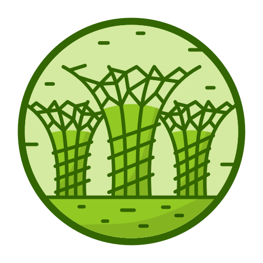

Jaga
Padi.id
Beranda
Layanan
Artikel
Kontak
Informasi
PRODUKSI PADI
53 6325 539,51 ton
Produksi padi tahun 2023
KONSUMSI PADI
31 310 000,00 ton
Konsumsi padi tahun 2023
GAGAL PANEN
4 596 500,38 ton
Gagal panen tahun 2023
Riwayat Semua Data
Tahun
2019
2020
2021
2020
2023
Produksi Padi
53 630 000,00 ton
54 748 977,00 ton
54 415 294,22 ton
54 649 202,24 ton
53 6325 539,51 ton
Konsumsi Padi
35 300 000,00 ton
32 070 000,00 ton
31 690 000,00 ton
31 330 000,00 ton
31 310 000,00 ton
Gagal Panen
1 120 000,00 ton
333 682,72 ton
140 000,0 ton
45 168,9 ton
4 596 500,38 ton